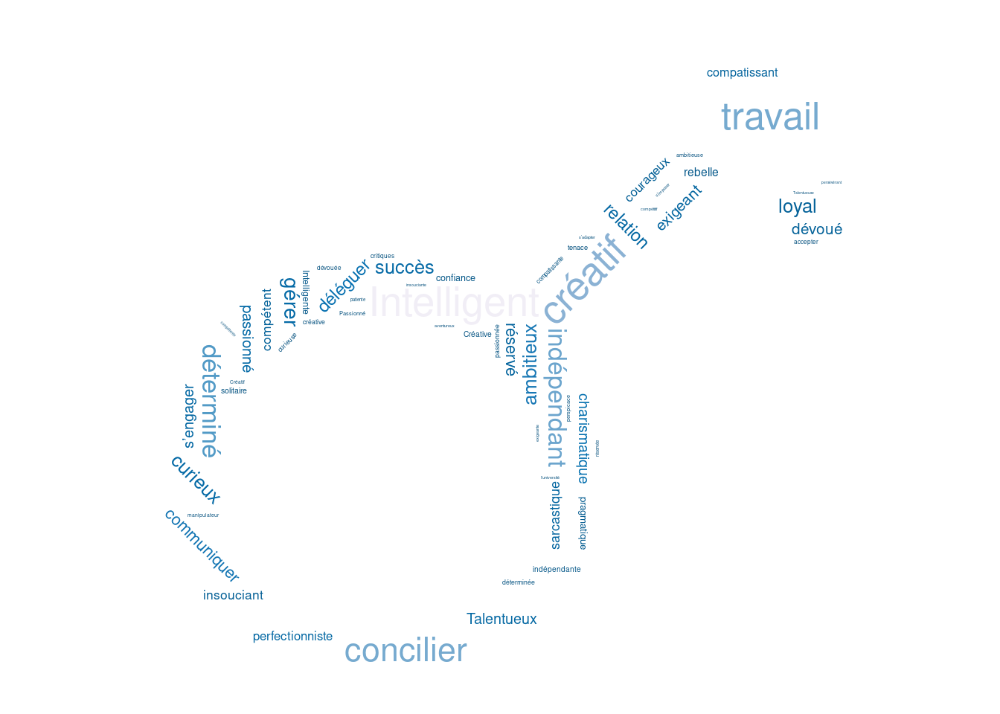
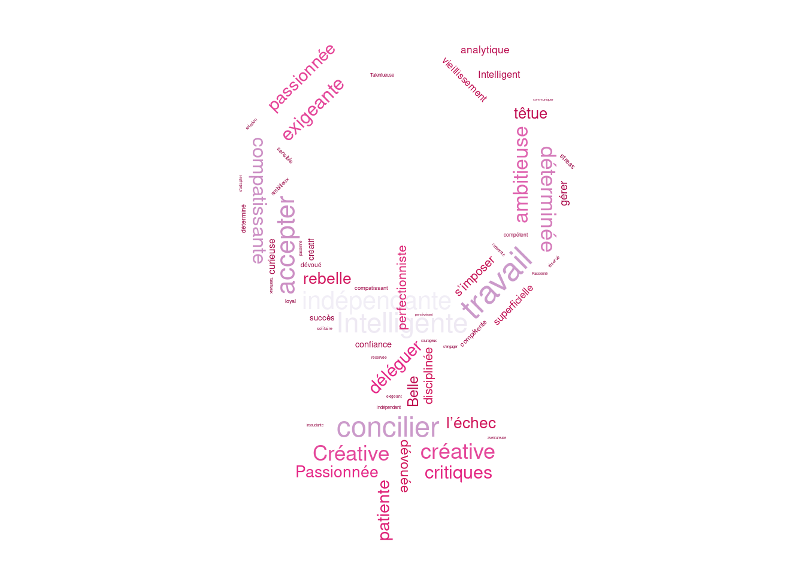

![]()
| Sexe | Nom | Age | Occupation | Residence | Apparence | Personnalite | Histoire | GenreRoman | Themes | Caracteristiques | trAge |
|---|---|---|---|---|---|---|---|---|---|---|---|
| F | Sarah Johnson | 35 | Ecrivain | New York | Cheveux blonds ondulés, yeux verts, visage ovale, style décontracté | Intelligente, créative, indépendante, réservée, a du mal à faire confiance aux autres | a publié plusieurs romans à succès, vit seule à New York, a une relation compliquée avec sa famille | Roman psychologique | Solitude, créativité, relations familiales, confiance en soi | Personnage complexe et profond, lutte pour trouver un équilibre entre son travail et sa vie personnelle | 2. Entre 30 et 40 ans |
Un biais systémique relevé par une étude.
Une récente étude (voir UNESCO et artificielle 2024) menée par des chercheurs de l’University College London (UCL) révèle que les outils d’intelligence artificielle (IA) les plus populaires font preuve de discrimination à l’égard des femmes et des personnes issues de différentes cultures et sexualités.
L’étude, commandée et publiée par l’UNESCO, a examiné les stéréotypes présents dans les LLM (Large Language Models), outils de traitement du langage naturel sur lesquels se basent les plateformes génératives d’IA les plus populaires, notamment Open AI’s GPT-3.5 et GPT-2 et META’s Llama 2.
Les résultats dévoilent que les noms féminins sont associés à des rôles de genre traditionnels, tels que “famille”, “enfants” et “mari”, tandis que les noms masculins sont associés à des mots tels que “carrière”, “dirigeants”, “gestion” et “entreprise”. Les textes générés par l’IA ont également montré des stéréotypes négatifs basés sur la culture ou la sexualité.
Par exemple, les histoires générées par Llama 2 placent les femmes dans des rôles domestiques quatre fois plus souvent que les hommes. Ces derniers se voient attribués des emplois plus divers et de haut statut.
Une des raisons avancée tient à la prédominance de ces biais dans les ressources utilisées pour construire ces modèles. La professeure Ivana Drobnjak, auteure du rapport de l’UCL Computer Science et membre de l’équipe de la Chaire UNESCO en IA à l’UCL, avance cette explication: “L’IA apprend d’Internet et des données historiques et prend des décisions en fonction de ces connaissances, qui sont souvent biaisées. Le fait que les femmes n’aient pas été aussi présentes que les hommes dans les sciences et l’ingénierie dans le passé, par exemple, ne signifie pas qu’elles sont de moins bonnes scientifiques et ingénieures. Nous devons guider ces algorithmes pour qu’ils apprennent l’égalité, l’équité et les droits de l’homme, afin qu’ils prennent de meilleures décisions.”
Les biais de genre sont si profondément ancrés dans les LLM qu’une refonte éthique dans le développement de l’IA est absolument nécessaire. L’équipe de la Chaire UNESCO en IA à l’UCL travaillera avec l’UNESCO pour sensibiliser à ce problème et contribuer au développement de solutions en organisant des ateliers et des évènements conjoints impliquant des parties prenantes pertinentes.
Le rapport a été présenté lors de la réunion de dialogue sur la transformation numérique de l’UNESCO le 6 mars 2024 et lors de la 68e session de la Commission de la condition de la femme des Nations Unies. En conclusion, les chercheurs recommandent que l’IA doit être guidée pour apprendre l’égalité, l’équité et les droits de l’homme afin de prendre de meilleures décisions.
Génération de textes
J’ai voulu effectuer une rapide vérification en utilisant l’IA générative française Mistral (https://chat.mistral.ai/). Je lui ai demandé de générer une liste de personnages fictifs en établissant leur biographie. Les informations recueillies sont dans le fichier personnages.csv, obtenu après retraitement.
Par exemple:
Analyse
La profession est-elle indépendante du sexe du personnage ?
On va croiser la profession (variable Occupation) avec Sexe (codée H pour hommes, et F pour femmes). On obtient le tableau Table 1 :
tab_OccupSexe <- table(personnages$Occupation, personnages$Sexe)
library('knitr')
kable(tab_OccupSexe)| F | H | |
|---|---|---|
| Acteur | 1 | 11 |
| Architecte | 0 | 11 |
| Artiste | 11 | 2 |
| Avocat | 20 | 5 |
| Chef cuisinier | 10 | 2 |
| Chef pâtissière | 2 | 0 |
| Danseuse | 12 | 0 |
| Designer de mode | 2 | 1 |
| Designer graphique | 3 | 0 |
| Détective privé | 1 | 3 |
| Ecrivain | 1 | 13 |
| Editrice | 7 | 0 |
| Enseignante | 10 | 1 |
| Entrepreneur | 2 | 17 |
| Etudiante | 1 | 1 |
| Informaticien | 1 | 12 |
| Ingénieur | 0 | 9 |
| Journaliste | 4 | 9 |
| Mannequin | 9 | 0 |
| Médecin | 6 | 12 |
| Musicien | 2 | 4 |
| Photographe | 8 | 1 |
| Policier | 1 | 10 |
| Productrice | 7 | 0 |
| Psychologue | 8 | 0 |
| Scientifique | 0 | 7 |
On va utiliser le package questionr (voir Barnier, Briatte, et Larmarange (2023)) pour calculer les structures par sexe, ainsi que les marges du tableau.
kable(round(cprop(tab_OccupSexe), 1))| F | H | All | |
|---|---|---|---|
| Acteur | 0.8 | 8.4 | 4.6 |
| Architecte | 0.0 | 8.4 | 4.2 |
| Artiste | 8.5 | 1.5 | 5.0 |
| Avocat | 15.5 | 3.8 | 9.6 |
| Chef cuisinier | 7.8 | 1.5 | 4.6 |
| Chef pâtissière | 1.6 | 0.0 | 0.8 |
| Danseuse | 9.3 | 0.0 | 4.6 |
| Designer de mode | 1.6 | 0.8 | 1.2 |
| Designer graphique | 2.3 | 0.0 | 1.2 |
| Détective privé | 0.8 | 2.3 | 1.5 |
| Ecrivain | 0.8 | 9.9 | 5.4 |
| Editrice | 5.4 | 0.0 | 2.7 |
| Enseignante | 7.8 | 0.8 | 4.2 |
| Entrepreneur | 1.6 | 13.0 | 7.3 |
| Etudiante | 0.8 | 0.8 | 0.8 |
| Informaticien | 0.8 | 9.2 | 5.0 |
| Ingénieur | 0.0 | 6.9 | 3.5 |
| Journaliste | 3.1 | 6.9 | 5.0 |
| Mannequin | 7.0 | 0.0 | 3.5 |
| Médecin | 4.7 | 9.2 | 6.9 |
| Musicien | 1.6 | 3.1 | 2.3 |
| Photographe | 6.2 | 0.8 | 3.5 |
| Policier | 0.8 | 7.6 | 4.2 |
| Productrice | 5.4 | 0.0 | 2.7 |
| Psychologue | 6.2 | 0.0 | 3.1 |
| Scientifique | 0.0 | 5.3 | 2.7 |
| Total | 100.0 | 100.0 | 100.0 |
Le tableau dévoile de nombreuses sur-représentations de genre et peu de parité. Par exemple, les il y a 7,3% d’entrepreneurs parmi les personnages mais seulement 1,6% des personnages féminins exercent cette profession. Calculons le V de Cramer (un avertissement indique que de nombreuses cases présentent peu d’effectifs).
Le V de Cramer est une mesure d’association utilisée pour évaluer la force de la relation entre deux variables qualitatives (catégorielles) dans un tableau de contingence. Il est particulièrement utile pour des tableaux plus grands que 2×2, car il permet de comparer des relations entre variables ayant des nombres différents de catégories.
Formule du V de Cramer
Le V de Cramer est calculé à partir de la statistique du \(\chi^2\) (chi-carré) selon la formule suivante : \(V = \sqrt{\frac{\chi^2}{n \times min(k-1,r-1)}}\) où :
- \(\chi^2\) est la statistique du test chi-carré,
- n est la taille de l’échantillon,
- k est le nombre de colonnes (modalités de la première variable),
- r est le nombre de lignes (modalités de la seconde variable),
- \(min(k−1,r−1)\) est le minimum entre le nombre de colonnes moins un et le nombre de lignes moins un.
Interprétation de la Valeur du V de Cramer
La valeur du V de Cramer varie de 0 à 1 :
- 0 indique une absence totale d’association entre les deux variables.
- 1 indique une association parfaite entre les deux variables.
En général, les seuils d’interprétation ne sont pas stricts, mais on utilise souvent les conventions suivantes :
- V < 0,2 : association faible,
- 0,2 ≤ V < 0,4 : association modérée,
- 0,4 ≤ V < 0,6 : association forte,
- V ≥ 0,6 : association très forte.
Une valeur de 0.7879426 dans le cadre du croisement entre la profession et le sexe d’une population indique une association très forte entre ces deux variables. Cela signifie qu’il existe une relation importante entre le sexe et la profession dans cette population : certaines professions sont probablement majoritairement exercées par un sexe plutôt que par l’autre. Cependant, cette mesure ne donne pas d’indication sur le sens de la relation, elle indique seulement qu’une relation existe avec une intensité élevée.
Des personnages féminins plutôt jeunes
Les personnages de cette population sont majoritairement âgés entre 30 et 40 ans:
| Âge | % |
|---|---|
| 1. Moins de 30 ans | 35.8 |
| 2. Entre 30 et 40 ans | 45.0 |
| 3. Entre 40 et 50 ans | 19.2 |
tab_trAge_Sexe <- table(personnages$Sexe, personnages$trAge)
cprop(tab_trAge_Sexe)
1. Moins de 30 ans 2. Entre 30 et 40 ans 3. Entre 40 et 50 ans All
F 62.4 55.6 12.0 49.6
H 37.6 44.4 88.0 50.4
Total 100.0 100.0 100.0 100.0cramer.v(tab_trAge_Sexe)[1] 0.3721009Malgré un V de Cramer peu élevé, on relève des surreprésentations des jeunes parmi les femmes. En effet, bienque la population des personnages compte autant d’hommes que de femmes, celles-ci représentent environ deux-tiers des moins de 30 ans. C’est encore plus marqué dans la tranche d’âge des plus de 40 ans, où les femmes ne représentent que 12% de cette classe d’âge.
Des thèmes très genrés
tab_GenreRoman <- table(personnages$Sexe,personnages$GenreRoman)
knitr::kable(round(lprop(tab_GenreRoman),1))| Drame architectural | Drame artistique | Drame de la mode | Drame du design | Drame hollywoodien | Drame journalistique | Drame médical | Drame psychologique | Drame scolaire | Polar | Roman culinaire | Roman d’affaires | Roman d’apprentissage | Roman d’aventure | Roman de danse | Roman gourmand | Roman littéraire | Roman musical | Roman psychologique | Thriller journalistique | Thriller juridique | Thriller policier | Thriller scientifique | Thriller technologique | Total | |
|---|---|---|---|---|---|---|---|---|---|---|---|---|---|---|---|---|---|---|---|---|---|---|---|---|---|
| F | 0.0 | 14.0 | 8.5 | 0.8 | 6.2 | 3.1 | 4.7 | 6.2 | 7.8 | 0.8 | 7.8 | 1.6 | 3.1 | 0.0 | 9.3 | 1.6 | 5.4 | 1.6 | 0.8 | 0.0 | 15.5 | 0.8 | 0.0 | 0.8 | 100 |
| H | 8.4 | 1.5 | 0.8 | 0.0 | 8.4 | 6.1 | 9.2 | 0.0 | 0.8 | 2.3 | 1.5 | 13.0 | 0.8 | 0.8 | 0.0 | 0.0 | 9.2 | 3.1 | 0.8 | 0.8 | 3.8 | 7.6 | 5.3 | 16.0 | 100 |
| All | 4.2 | 7.7 | 4.6 | 0.4 | 7.3 | 4.6 | 6.9 | 3.1 | 4.2 | 1.5 | 4.6 | 7.3 | 1.9 | 0.4 | 4.6 | 0.8 | 7.3 | 2.3 | 0.8 | 0.4 | 9.6 | 4.2 | 2.7 | 8.5 | 100 |
Réprésentations de genre dans les thèmes abordés
Lorsque l’on analyse les thèmes des œuvres selon le sexe, la prédominance de genre est présente. Le tableau ?@tbl-theme le démontre. Le V de Cramer vaut 0.7119846 ce qui est le signe d’un lien avéré et plutôt fort entre le sexe du personnage principal et le thème de l’œuvre.
Les traits de personnalité selon le sexe du personnage
On représente les termes employés pour décrire la personnalité de personnage par des nuages de mots.


Conclusion
Les outils génératifs mis à disposition gratuitement (comme dans notre exemple) ou par abonnement utilisent les grands modèles de langage. Ceux-ci sont constitués par un apprentissage automatique capable de comprendre et générer des textes. Ils opèrent en analysant des volumes massifs de données. Les premiers modèles utilisaient des données issues du web, il est donc peu étonnant qu’ils reproduisent les biais reconnus dans nos représentations. Ainsi, il faut voir les réponses fournies par les assistants conversationnels comme un reflet de notre pensée contemporaine, avec ses travers et ses inconsistances.
De plus, les données accessibles depuis internet concernant les femmes sont largement minoritaires. Seuls 20% des biographies disponibles sur Wikipedia sont des fiches de personnages féminins. Enfin, les contributeurs, webmestres, créateurs de contenus sont également très majoritairement masculins. Par exemple, les contributeurs de Wikipedia déclarent à 87% être de sexe masculin (voir Wikipédia 2024).
Liens
Données
Réalisées par  https://raw.githubusercontent.com/RemiDumas/RStats/refs/heads/main/posts/biais-de-genre-IA/personnages.csv
https://raw.githubusercontent.com/RemiDumas/RStats/refs/heads/main/posts/biais-de-genre-IA/personnages.csv
Source
https://techxplore.com/news/2024-04-large-language-generate-biased-content.html
References
Barnier, Julien, François Briatte, et Joseph Larmarange. 2023. questionr: Functions to Make Surveys Processing Easier. https://juba.github.io/questionr/.
UNESCO, et Centre international de recherche sur l’intelligence artificielle. 2024. « Challenging systematic prejudices: an investigation into bias against women and girls in large language models ». https://unesdoc.unesco.org/ark:/48223/pf0000388971.
Wikipédia. 2024. « Biais de genre sur Wikipédia — Wikipédia, l’encyclopédie libre ». \url{http://fr.wikipedia.org/w/index.php?title=Biais_de_genre_sur_Wikip%C3%A9dia&oldid=218632729}.